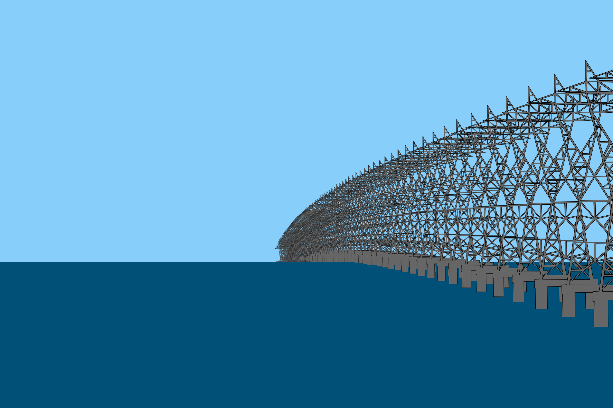

Lake Pontchartrain Pylons¶
back to Examples
So there is a YouTuber named Soundly who makes observations of various structures over Lake Pontchartrain. This lake has a bunch of structures which line along a perfectly straight line path across the water which makes them perfect for showing the curvature of the earth!
In this example shows how we can use the render to model the observation of some power lines which go across a significant portion of the lake:
1 2 3 4 5 6 7 8 9 10 11 12 13 14 15 16 17 18 19 20 21 22 23 24 25 26 27 28 29 30 31 32 33 34 35 36 37 38 39 40 41 42 43 44 45 46 47 48 49 50 51 52 53 | from refraction_render.renderers import Scene,Renderer_35mm
from refraction_render.calcs import CurveCalc,FlatCalc
from pyproj import Geod
import numpy as np
import os
def T_prof(h):
e1 = np.exp(h/1.5)
e2 = np.exp(h/0.1)
return (2/(1+e1))*0.1+(2/(1+e2))*0.05
calc_args = dict(T_prof=T_prof)
calc = CurveCalc(**calc_args)
s = Scene()
geod = Geod(ellps="sphere")
# gps coordinates for the first two pylons
lat_1,lon_1 = 30.084791, -90.401287
lat_2,lon_2 = 30.087219, -90.400237
# getting the distance between pylongs and the heading in which
# the rest of the pylons will follow across the lake
f_az,b_az,dist = geod.inv(lon_1,lat_1,lon_2,lat_2)
# calculating the distances (Note I got this info from google earth)
dists = np.arange(0,24820,dist)
# image path for pylon image
image_path ="pylon.png"
# looping over distances calculating the gps position of each pylon and
# adding an image in that position
lat_f = 0
lon_f = 0
for d in dists:
lon,lat,b_az = geod.fwd(lon_1,lat_1,f_az,d)
lat_f += d*lat
lon_f += d*lon
s.add_image(image_path,(0,lat,lon),dimensions=(-1,23),direction=b_az)
# Soundly's position
lat_i, lon_i = 30.077320, -90.404888
# use weighted average of positions with distance to get center frame.
lat_f, lon_f = lat_f/dists.sum(), lon_f/dists.sum()
# render image with wide field of view
renderer = Renderer_35mm(calc,10,lat_i,lon_i,(lat_f,lon_f),40000,
vert_obs_angle=0.0,vert_res=2000,focal_length=600)
renderer.render_scene(s,"soundly_pylons.png")
# render image with small field of view effectively zooming in
renderer = Renderer_35mm(calc,10,lat_i,lon_i,(lat_f,lon_f),40000,
vert_obs_angle=0.0,vert_res=2000,focal_length=2000)
renderer.render_scene(s,"soundly_pylons_zoom.png")
|
Now to compare reality to our render! Here is one of Soundly’s original images of the power lines:

Here is a render trying to reproduce that result.

One interesting effect which can’t really be seen is the inferior mirage which is creating a distortion of the bottom parts of the pylons. Here is a zoomed in view of the actual pylons:
{kind=link}
Compared to the rendered model zoomed in:
{kind=link}
back to Examples